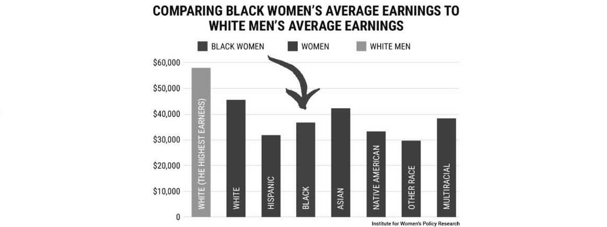

UNEQUAL PAY, UNEQUAL OPPORTUNITIES: HOW GENDER AND RACE SHAPE THE WORKPLACE
Behind the promise of fairness, deep divides in pay and
treatment still shape careers depending on gender and race.
| Table of Contents |
| I. |
Gender Pay Gap: Equal Work, Unequal Pay |
| II. |
Race Differences: Equal Worth, Unequal Treatment |
Gender Pay Gap:
Equal Work, Unequal Pay
The gender pay gap is the average difference in earnings between men and women in the workforce.
It reflects not just differences in pay for the same job, but also unequal access to higher-paying roles,
promotions, and career opportunities, often driven by discrimination, occupational segregation,
and social expectations.
Causes
Occupational segregation (concentration in certain jobs)
Men and women often cluster into different industries and roles. For example, women are more
likely to work in lower-paying fields such as caregiving, education, or administrative support,
while men are more concentrated in higher-paying fields like technology and engineering.
According to the International Labour Organization, nearly 60% of women worldwide are employed in
just three sectors — health, education, and social work. On the other hand, men are overrepresented in
dangerous but higher-paying jobs (like construction or mining), which can also contribute to inequality.
Discrimination and unconscious bias in promotions and hiring
Bias affects both genders. For example, women may face stereotypes about being “less committed”
due to family responsibilities, while men can face bias when applying for roles in nursing, teaching,
or caregiving. On average, women worldwide earn about 77 cents for every dollar earned by men (UN Women, 2022),
but studies also show that men entering female-dominated professions may be undervalued or face stigma.
Limited access to leadership positions (“glass ceiling”)
High-paying leadership roles often show imbalance. As of 2023, women hold only 32% of senior management
roles globally (Grant Thornton report). At the same time, men can also face barriers in leadership within
sectors traditionally dominated by women, such as healthcare administration or education management.
These gaps limit overall equality across genders.
Career interruptions (family or caregiving responsibilities)
Career breaks affect both men and women, but in different ways. Women are more likely to take maternity
leave, while men may face stigma when requesting paternity leave or flexible schedules. In the U.S.,
42% of mothers report reducing work hours or taking career breaks for family responsibilities, compared
to 28% of fathers (Pew Research Center). Both situations can slow career progression and reduce lifetime
earnings, reinforcing inequality.
Impacts
Reduced lifetime earnings
Gender inequality often leads to lower lifetime earnings. For example, women working in
lower-paying sectors or men facing stigma in caregiving roles may both experience reduced
wage growth. On average, the global gender pay gap still stands at about 20% (ILO, 2022),
affecting long-term financial security for individuals of all genders.
Increased poverty risk
Inequality raises poverty risks, but in different ways. Single mothers and elderly women are
disproportionately affected due to lower lifetime earnings, while men in unstable or dangerous
low-paying jobs (like construction or mining) also face economic vulnerability. These dynamics
increase the risk of poverty across genders.
Wider economic inequality and productivity loss
When skills are underutilized due to gender bias or segregation, economies suffer. The World
Bank estimates that closing gender gaps in work could boost global GDP by $160 trillion.
Inequality prevents men and women alike from fully contributing to national productivity.
Lower representation in leadership and decision-making
Under representation in leadership roles affects both genders, though in different contexts.
Globally, women hold only 32% of senior management roles (Grant Thornton, 2023). Conversely,
men are underrepresented in leadership within female-dominated sectors such as healthcare and
education. Lack of balanced representation in decision-making reduces diverse perspectives
and fair policy outcomes.
Solutions
Pay transparency laws (countries with transparency show reduced gaps by up to 7%).
Government regulations (e.g., Iceland legally requires equal pay certification).
Workplace policies: paid parental leave, flexible work hours, childcare support.
Mentorship programs: Women in STEM initiatives have increased female participation by over 15%.
Gender Race Differences:
Equal Worth, Unequal Treatment
Race differences in the workplace describe how cultural norms, stereotypes, and systemic biases affect
how employees of different racial or ethnic backgrounds are valued and treated. These differences
intersect with gender, meaning women of certain racial groups often face a “double disadvantage”.
Ex. 1: Japan – Traditional gender roles still influence workplaces;
women are often expected to perform supportive roles rather than leadership, regardless of skill.
Ex. 2: France – In many workplaces, French men are known for showing courtesy toward women
but often treat other men, including foreign colleagues, with unnecessary harshness or
dismissiveness, creating a tense and competitive environment.

Ex. 3: United States – Women of color (e.g., Black and Latina women) earn significantly less
than white women and men, showing the combined effect of race and gender.
Ex. 4: Middle East – Cultural expectations limit women’s participation in certain industries,
though reforms in countries like Saudi Arabia are slowly changing norms.
Impacts
Pay disparities across races
People of color, regardless of gender, are often underpaid compared to their white counterparts.
For example, studies in the U.S. show that Black and Hispanic workers consistently earn less than
white workers, even when education and experience are the same.
Fewer promotion and leadership opportunities
Racial minorities face reduced chances of advancing into management or executive positions.
This “glass ceiling” affects both men and women of color, keeping leadership roles less diverse
and limiting career growth.
Workplace discrimination and mental health
Bias, stereotyping, and microaggressions create hostile environments for minority employees.
These experiences can lead to stress, burnout, and shorter career longevity, regardless of gender.
Loss of diverse perspectives
When leadership lacks racial and cultural diversity, organizations miss out on fresh ideas and innovation.
Diverse teams are proven to perform better, yet underrepresentation weakens creativity and problem-solving across workplaces.
Solutions
- 1. Diversity and inclusion programs: Companies with diverse leadership teams report 33% higher profitability (McKinsey, 2020).
- 2. Bias training for hiring managers to reduce discrimination.
- 3. Mentorship for minorities: Programs linking minority women with role models increase retention and promotion rates.
- 4. Stronger anti-discrimination laws and reporting systems.
- 5. Cultural sensitivity campaigns in multinational firms to challenge stereotypes.
↑